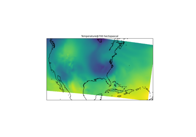
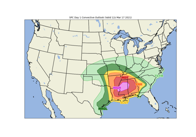
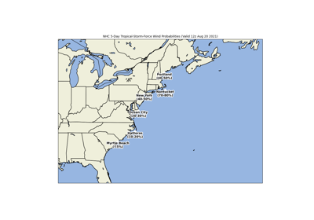
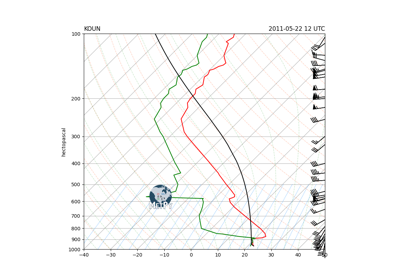
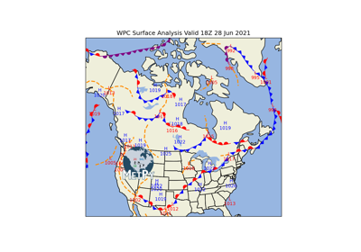

Plotting#
Examples using MetPy’s various specialty plotting routines.


Raster Plots using Declarative Syntax
Raster Plots using Declarative Syntax



NOAA SPC Convective Outlook



NOAA NHC Wind Speed Probabilities
NOAA NHC Wind Speed Probabilities



Sounding as Dataset Example

Plotting Fronts